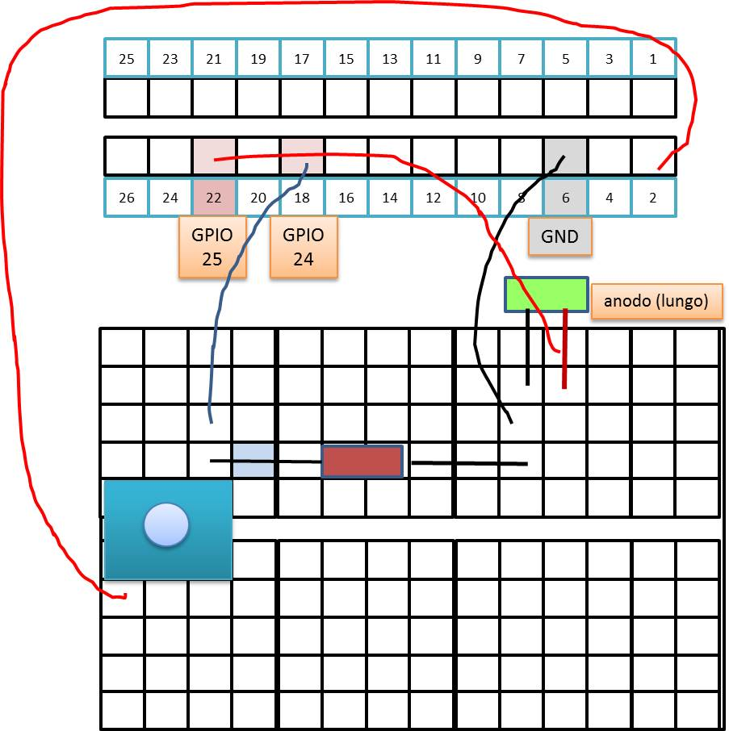
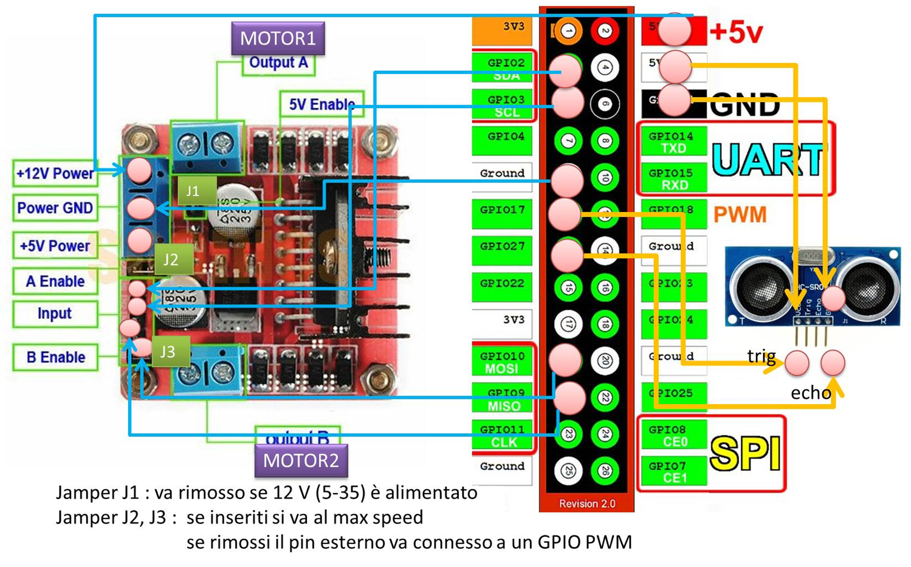
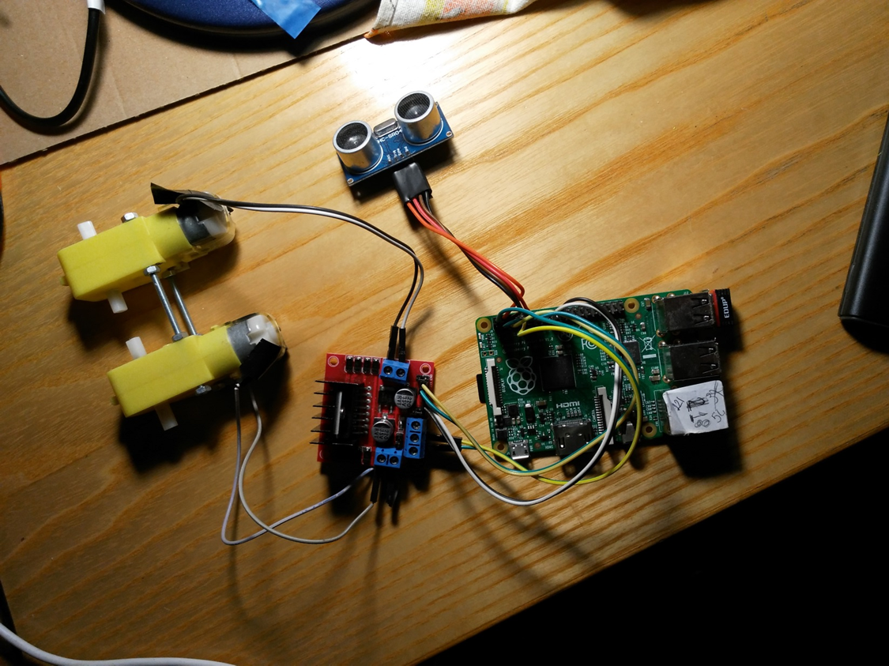

72939 - LAB8 | Using RaspberryPi
INTRODUCTION
- Vision:
Technology is fundamental, but it is something to be properly used, not something we have to be subjected to. - Goal: Show how a low-cost computational device like
RaspberryPi
can be included in our heterogeneous distributed systems applications, according on to a
message passing programming style. - Work:
- A very simple introduction to the usage of RaspberryPi GPIO by means of bash commands, GPIO library and Python: see Raspberry Low level Projects.
- Design ad development of a distributed, heterogeneous system with one producer and many consumers.
- Using physical devices including a physical Led, a physical Button and motors.
STARTING
- Download and install PuTTY
- Raspberry
BEFORE PiB+ : Download the unibo SD image: 2016-02-26-raspbian-jessie-iss.img.zip (WARNING: 1GB) - Raspberry
PiB+ : Download the unibo SD image: pi3b+.zip (WARNING: 2GB) - Generate your own Secure Digital card
- Consult rpi_sd.pdf , guida_rpi.pdf and Installing operating system images on Linux
- Insert the SD card in the proper PC slot and look (in the unit
boot ) at the filemywifi.conf :ctrl_interface=DIR=/var/run/wpa_supplicant GROUP=netdev update_config=1 ap_scan=1 eapol_version=1 fast_reauth=1 network={ ssid="natspot" scan_ssid=1 key_mgmt=WPA-PSK psk="123456789" } - Insert the SD card into the RaspberryPi and extend the file system by running:
sudo raspi-config - Connect the RaspberryPi to the PC via a Ethernet cable
- Open PuTTY and connect to 192.168.137.2 port 22
- Login with: pi pswd= raspberry
- Look at the output:
IP 192.168.137.2 Wifi settings /boot/mywifi.conf Web terminal https://192.168.137.2:4200 VNC Remote Desktop 192.168.137.2:1 Password:123456 SMB Network Share \\192.168.137.2\home_pi\
- Access to the RaspberryPi via Windows (connnetti unita di rete):
\\192.168.137.2\home_pi\
-
Connect the RaspberryPi to a PC with Wifi (future applications).
- Insert a WIFI adapter (e.g. EDUP - Adattatore Wifi Mini USB,150MBps) in a USB slot.
- Activate an hot spot (e.g by using a smart device) with name natspot and password 123456789
- Turn on the RaspberryPi. It will acquire an address (192.168.43.xxx) as shown by the command ifconfig
- Open
PuTTY and connect to 192.168.43.xxx on port 22 - Useful reading: PiB Wi-Fi/Bluetooth
-
Useful commands:
sudo iwlist wlan0 scan sudo cat /etc/wpa_supplicant/wpa_supplicant.conf
The hardware

Model B+
The Model B+ uses the same numbering as the Model B2.0, and adds some new pins.Bash example
echo 15 > /sys/class/gpio/unexport echo 15 > /sys/class/gpio/export echo 18 > /sys/class/gpio/unexport echo 18 > /sys/class/gpio/export cd /sys/class/gpio/gpio15 echo out > direction echo 0 > value cd /sys/class/gpio/gpio18 echo out > direction echo 0 > value
WiringPi example
gpio readall +-----+-----+---------+------+---+-Model B2-+---+------+---------+-----+-----+ | BCM | wPi | Name | Mode | V | Physical | V | Mode | Name | wPi | BCM | +-----+-----+---------+------+---+----++----+---+------+---------+-----+-----+ | | | 3.3v | | | 1 || 2 | | | 5v | | | | 2 | 8 | SDA.1 | ALT0 | 1 | 3 || 4 | | | 5V | | | | 3 | 9 | SCL.1 | ALT0 | 1 | 5 || 6 | | | 0v | | | | 4 | 7 | GPIO. 7 | IN | 1 | 7 || 8 | 1 | ALT0 | TxD | 15 | 14 | | | | 0v | | | 9 || 10 | 0 | OUT | RxD | 16 | 15 | | 17 | 0 | GPIO. 0 | IN | 0 | 11 || 12 | 0 | OUT | GPIO. 1 | 1 | 18 | | 27 | 2 | GPIO. 2 | IN | 0 | 13 || 14 | | | 0v | | | | 22 | 3 | GPIO. 3 | IN | 0 | 15 || 16 | 0 | IN | GPIO. 4 | 4 | 23 | | | | 3.3v | | | 17 || 18 | 0 | IN | GPIO. 5 | 5 | 24 | | 10 | 12 | MOSI | ALT0 | 0 | 19 || 20 | | | 0v | | | | 9 | 13 | MISO | ALT0 | 0 | 21 || 22 | 0 | IN | GPIO. 6 | 6 | 25 | | 11 | 14 | SCLK | ALT0 | 0 | 23 || 24 | 1 | ALT0 | CE0 | 10 | 8 | | | | 0v | | | 25 || 26 | 1 | ALT0 | CE1 | 11 | 7 | +-----+-----+---------+------+---+----++----+---+------+---------+-----+-----+ | 28 | 17 | GPIO.17 | IN | 0 | 51 || 52 | 0 | IN | GPIO.18 | 18 | 29 | | 30 | 19 | GPIO.19 | IN | 0 | 53 || 54 | 0 | IN | GPIO.20 | 20 | 31 | +-----+-----+---------+------+---+----++----+---+------+---------+-----+-----+ | BCM | wPi | Name | Mode | V | Physical | V | Mode | Name | wPi | BCM | +-----+-----+---------+------+---+-Model B2-+---+------+---------+-----+-----+
gpio unexportall gpio export 16 out gpio export 1 out gpio write 16 0 gpio write 1 0
Resistors
The Raspberry Pi has internal pull-up and pull-down resistors that can be specified when the pin declarations are made.If we need some resistor: resistor color code
Links (introduction to GPIO control)
- VIDEO: Raspberry Pi GPIO with Java
- About pins: RPi_Low-level_peripherals
- About Raspberry Pi GPIOs control: RPi GPIO Code Samples
- Command-line utility gpio (used by Wiringpi)
- gpio-pins-and-python
- Wiringpi
- Oracle java/RaspberryPi_Setup
- Oracle java/RaspberryPi_GPIO
- Java gpio-web-control
Connect the hardware
| ButtonLed | Motors |
|  |  |
Basic Experiments (interactive)
| Bash | Gpio | Python |
|---|---|---|
led25OnOff.sh
echo Unexporting.
echo 25 > /sys/class/gpio/unexport #
echo 25 > /sys/class/gpio/export #
cd /sys/class/gpio/gpio25 #
echo Setting direction to out.
echo out > direction #
echo Setting pin high.
echo 1 > value #
sleep 1 #
echo Setting pin low
echo 0 > value #
sleep 1 #
echo Setting pin high.
echo 1 > value #
sleep 1 #
echo Setting pin low
echo 0 > value #
|
led25Gpio.sh
gpio readall #
echo Setting direction to out
gpio mode 6 out #
echo Write 1
gpio write 6 1 #
sleep 1 #
echo Write 0
gpio write 6 0 #
|
ledPython25.py
The newest version of Raspbian has the RPi.GPIO library pre-installed. sudo python >>> import RPi.GPIO as GPIO >>> GPIO.VERSION >>> GPIO.setmode(GPIO.BCM) >>> GPIO.setup(25,GPIO.OUT) >>> while True: >>> GPIO.output(25,GPIO.HIGH) >>> time.sleep(1) >>> GPIO.output(25,GPIO.LOW) >>> time.sleep(1) >>> quit() |
ButtonLed Code
| Bash | Gpio | Python |
|---|---|---|
|
led25OnOff.sh buttonOn24Click.sh buttonLed.sh |
led25Gpio.sh button24Gpio.sh |
ledPython25.py buttonPython24.py buttonLedPython.py |
Using Pi4J : useful links
Java8+Pi4j (pdf)Pi4j site
Sensors
SonarAlone.c
Motors
nanoMotorDriveA.sh
nanoMotorDriveB.sh
By AN Unibo-DISI